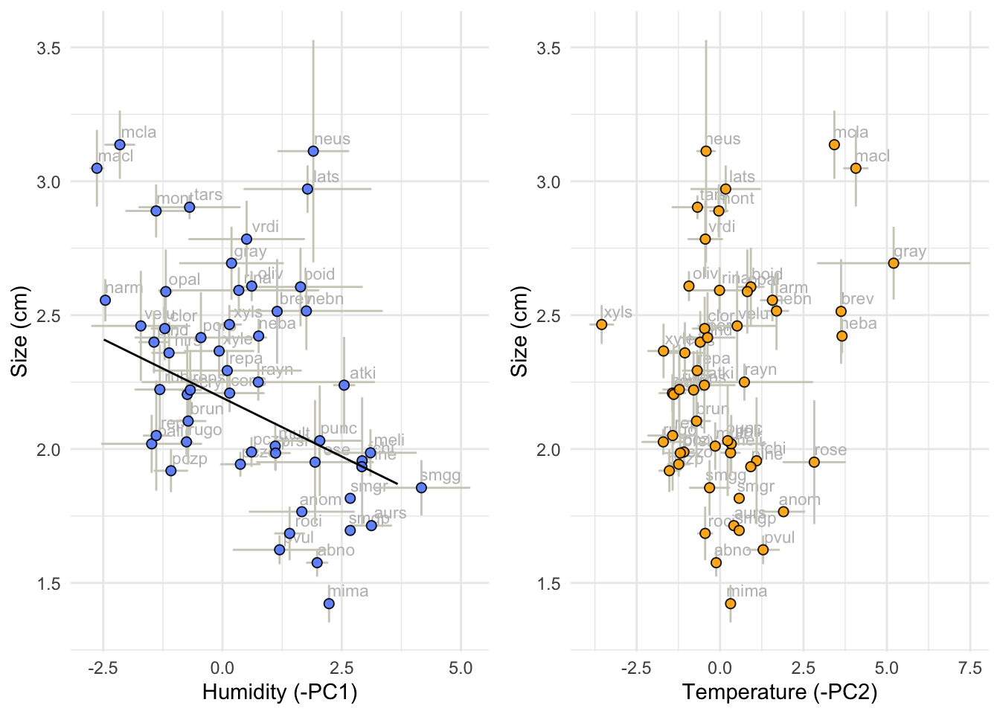

# We source the libraries from this file:
source(here::here("Scripts/MacroEcol_1_Libraries.R"))# Consolidated by individual
Cons1 <- read.csv(here::here("Data/FromCode/ConsReflEcolInd.csv"))[-1]
# Group by species
PCSZ1Agg <-
as.data.frame(
Cons1 %>%
dplyr::select(size, phylogeny_name, PC1, PC2) %>%
dplyr::group_by(phylogeny_name) %>% # group
dplyr::summarise(
meanPC1 = mean(PC1),
meanPC2 = mean(PC2),
meanSize = mean(size),
sdSize = sd(size),
sdPC1 = sd(PC1),
sdPC2 = sd(PC2)
)
) Phylogenetic data
In our analyses we use a subset of the 1300 posterior sample trees to represent the phylogenetic information accounting for uncertainty in node ages and topology:
# Set subset limits
trees_subset_min<-1000
trees_subset_max<-2000Import phylogeny (multiple trees)
trees <- ape::read.tree(here::here("Data/XMAS_mat2b_bst2ef_set23nn2_pinct.nwk"))
MCCtree <-
ape::read.nexus(here::here("Data/xmas_mat2b_bst2ef_set23nn2_pinct_med.tre"))The MCC (Maximum clade credibility) tree used here is the BEAST MCC tree. We did not need to prun the tree. The equivalence between specie sin the tree and data frame was tested in previous steps (tab optical properties).
Merge
# Modify to make it compatible with tree tips
rownames(PCSZ1Agg) <- PCSZ1Agg[, 1] # make species the row names
PCSZAgg <- PCSZ1Agg[,2:length(PCSZ1Agg)] # eliminate spp name (redundant)The names between data and tree tips should match.
# Test if the species are the same
identical(
length(name.check(MCCtree, PCSZ1Agg$phylogeny_name)$tree_not_data),
length(PCSZ1Agg$phylogeny_name)
)## [1] TRUEThe PGLS function has to be adapted to the data frame and model on each case
PGLS in the MCC
comp_data <- comparative.data(
phy = MCCtree, data = PCSZ1Agg,
names.col = "phylogeny_name", vcv = TRUE,
na.omit = FALSE, warn.dropped = TRUE
)PGLS Multiple Trees with 2 predictors + intercept
Source function
note that this function has to be adapted to the data frame and model on each case
# function I is for size as response
source(here::here("Scripts/14_multiple_pgls_function_I.R"))Define model
MuPGLSMod2 <- Response ~ PC1 + PC2pglsmodSize <- pgls(meanSize ~ meanPC1 + meanPC2,
data = comp_data, param.CI = 0.95, lambda = "ML"
)
FinMccSizec <- as.numeric(round(summary(pglsmodSize)$coefficients[,1],3))
FinMccSizep <- as.numeric(round(summary(pglsmodSize)$coefficients[,4],3)) MulSizeDf <-
PCSZAgg %>%
dplyr::select(-sdSize,
-sdPC1,
-sdPC2) %>%
dplyr::rename("Response" = meanSize,
"PC1" = meanPC1,
"PC2" = meanPC2)
runsSize<-lapply(trees[trees_subset_min:trees_subset_max],
pgls_runI,
model=MuPGLSMod2,
dataset=MulSizeDf) ## ERROR : Problem with optim:52ERROR: ABNORMAL_TERMINATION_IN_LNSRCH
## ERROR : Problem with optim:52ERROR: ABNORMAL_TERMINATION_IN_LNSRCH
## ERROR : Problem with optim:52ERROR: ABNORMAL_TERMINATION_IN_LNSRCH
## ERROR : Problem with optim:52ERROR: ABNORMAL_TERMINATION_IN_LNSRCHdfSize <- ldply(runsSize, data.frame)
length(dfSize[,1])## [1] 997write.csv(dfSize, here::here("Data/FromCode/MuTPglsResultsSize.csv"))
FinSizeM <- HPDinterval(as.mcmc(dfSize))Predictions:
SzVPC1 <- seq(range(PCSZAgg$meanPC1)[1],
range(PCSZAgg$meanPC1)[2],0.01) # A range of PC1
SzVPC2 <- rep(mean(PCSZAgg$meanPC2),length(SzVPC1)) # mean PC2 all beetles
new1z<-data.frame("meanPC1" = SzVPC1, "meanPC2" = SzVPC2) # data frame
size1z<-predict(pglsmodSize, newdata = new1z,
type = "response") # Expected size
trend1z<-data.frame(size1z,SzVPC1) # join Size and expected NIR reflectancePrepare data:
ToPlot <-
as.data.frame(
Cons1 %>%
dplyr::mutate(spp = substr(ind, 1, 4)) %>%
dplyr::select(size, spp, PC1, PC2) %>%
dplyr::group_by(spp) %>% # group
dplyr::summarise(
meanPC1 = mean(PC1),
meanPC2 = mean(PC2),
meanSize = mean(size),
sdSize = sd(size),
sdPC1 = sd(PC1),
sdPC2 = sd(PC2)
)
)
rownames(ToPlot) <- ToPlot[, 1]szp1 <- ggplot(ToPlot, aes(x = -meanPC1, y = meanSize)) +
geom_text(
label=rownames(ToPlot),
nudge_x = 0.4, nudge_y = 0.05,
col="gray", size=3
) +
geom_errorbar(aes(
ymin = meanSize - sdSize,
ymax = meanSize + sdSize
),
col = "#cecec2"
) +
geom_errorbarh(aes(
xmin = -meanPC1 - sdPC1,
xmax = -meanPC1 + sdPC1
),
col = "#cecec2"
) +
geom_point(
size = 2, pch = 21, fill = "#648fff",
colour = "black", alpha = 0.9
) +
theme_minimal() +
theme(legend.position = "none") +
geom_line(aes(x = -SzVPC1, y = size1z), data=trend1z) +
xlab("Humidity (-PC1)") +
ylab("Size (cm)")
szp2 <- ggplot(ToPlot, aes(x = -meanPC2, y = meanSize)) +
geom_text(
label=rownames(ToPlot),
nudge_x = 0.5, nudge_y = 0.05,
col="gray", size=3
) +
geom_errorbar(aes(
ymin = meanSize - sdSize,
ymax = meanSize + sdSize
),
col = "#cecec2"
) +
geom_errorbarh(aes(
xmin = -meanPC2 - sdPC2,
xmax = -meanPC2 + sdPC2
),
col = "#cecec2"
) +
geom_point(
size = 2, pch = 21, fill = "#ffb000",
colour = "black", alpha = 0.9
) +
theme_minimal() +
theme(legend.position = "none") +
xlab("Temperature (-PC2)") +
ylab("Size (cm)")
grid.arrange(szp1, szp2, nrow = 1)